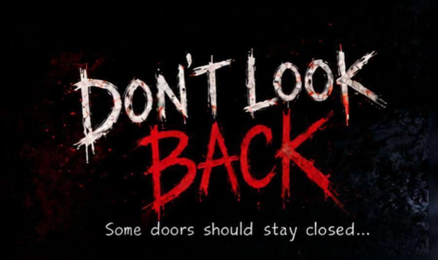

Games

UNTIL 6 AM
Your night shift lasts until 6 AM. Watch six CCTV cameras, report what changes and survive every hour.
See the game
Don’t Look Back
Wake up in a cursed house, solve its puzzles and hide from the entity hunting you.
See the gameAbout
I’m Pranav Santosh Kuyate, founder of PRANAVXD Studios. I’m an independent developer who builds games, experiments with technology and documents my journey through projects and devlogs.
PRANAVXD Studios is an independent game development studio founded by Pranav Santosh Kuyate. It focuses on indie horror games, experimental projects and development updates. I build games on my phone, and I love tense atmospheres, tight mechanics and showing every step of the process in public.
Game DeveloperGodotGDScriptPythonSkills
Game Development
Indie horror games
Godot
Game engine
GDScript
Gameplay scripting
Python
Programming
Video Editing
Trailers and devlogs
Devlogs
Shown on YouTube
Questions
Who makes these games?
PRANAVXD Studios is an independent game development studio founded by Pranav Santosh Kuyate, an indie developer who builds games on a mobile phone.
Where can I play them?
UNTIL 6 AM is on CrazyGames and Don’t Look Back is on itch.io.
How can I follow development or give feedback?
Join the Discord server and watch the devlogs on YouTube.